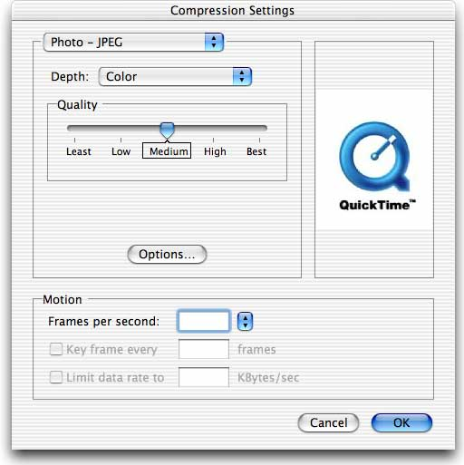
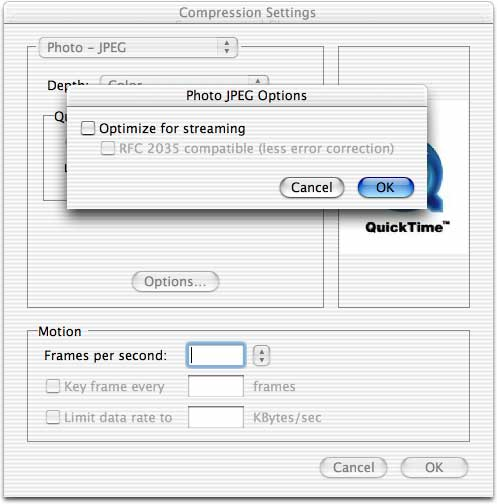
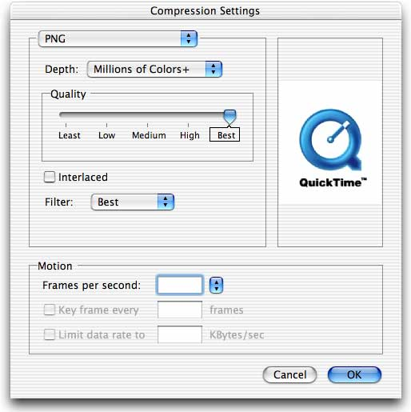
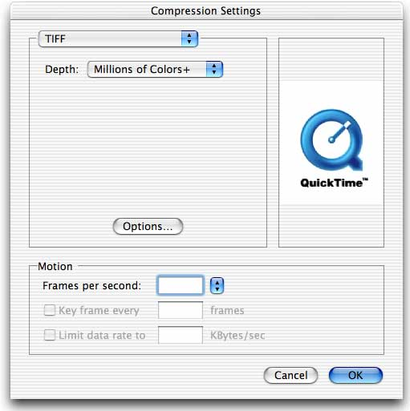

|
IntroductionThe Standard Image-Compression Dialog Component provides a consistent user interface for specifying the parameters that control the compression of an image or image sequence. The dialog presented allows the user to pick a compressor component, the pixel depth for the operation, the desired spatial quality and when compressing a sequence of images, allows the choosing of a frame rate, key frame rate and data rate. In addition to these settings, a chosen compressor component may have codec-specific options and present these settings in its own "Options..." dialog from within Standard Compression as shown in Figure 1 and Figure 2. This is done by the compressor component implementing Figure 1: Compression settings and codec-specific options  Figure 2: Compression settings and codec-specific streaming options  QuickTime 6 introduces a set of APIs which can be implemented in addition to Figure 3: Embedded codec-specific options  When implementing a compressor component, you can now choose how your codec-specific options will be presented in the Standard Image-Compression Dialog.
Additionally, you may now remove the "Quality Slider" control as shown in Figure 4. You may want to do this if your compressor component performs only lossless compression ( Figure 4: Quality Slider removed  This technical note describes each of the ImageCodec ' The sample implementation demonstrates supplying a checkbox and a popup menu control. It can be used as a starting point to easily add support for these new ImageCodec APIs to your compression component. Note: While this technical note discusses how Standard Compression interacts with these new ImageCodec APIs, you can also call them directly as a way of conveniently implementing ImageCodec 'DITL' Dispatch SelectorsThere are six new selectors all of which must be implemented to allow the Standard Image-Compression Dialog to embed codec-specific settings within its dialog. These selectors should be added to Listing 1: ImageCodec selectors from ImageCodec.h kImageCodecGetDITLForSizeSelect = 0x002E kImageCodecDITLInstallSelect = 0x002F kImageCodecDITLEventSelect = 0x0030 kImageCodecDITLItemSelect = 0x0031 kImageCodecDITLRemoveSelect = 0x0032 kImageCodecDITLValidateInputSelect = 0x0033 Listing 2: Component dispatcher. ComponentComment ("Codec Range")
ComponentRangeBegin (1)
ComponentCall (GetCodecInfo)
.
. ...Various other Codec Range 1 selectors
.
ComponentCall (GetDITLForSize)
ComponentCall (DITLInstall)
ComponentCall (DITLEvent)
ComponentCall (DITLItem)
ComponentCall (DITLRemove)
ComponentCall (DITLValidateInput)
ComponentRangeEnd (1)
ImageCodec 'DITL' FunctionsImageCodecGetDITLForSizeComponentResult ImageCodecGetDITLForSize(ComponentInstance ci,
Handle *ditl,
Point *requestedSize)
ditl - A pointer to a handle. Dialog items are returned here. requestedSize - The requested size in pixels that fits into the dialog. Return When your compressor component is selected, Standard Compression will call There are two special values passed in for the size parameter; Standard Compression will currently only ask for Once you have successfully returned the appropriate dialog items lists, your compressor component will subsequently get called to manage the items. The returned handle should not be a resource manager handle. Listing 3: Example ' #define kMyCodecDITLResID 129
#define kMyCodecPopupCNTLResID 129
#define kMyCodecPopupMENUResID 129
#define TEXT_HEIGHT 16
#define INTER_CONTROL_SPACING 12
#define POPUP_CONTROL_HEIGHT 22
resource 'DITL' (kMyCodecDITLResID, "Compressor Options") {
{
{0, 0, TEXT_HEIGHT, 100},
CheckBox { enabled, "Checkbox" },
{TEXT_HEIGHT + INTER_CONTROL_SPACING, 0,
TEXT_HEIGHT + INTER_CONTROL_SPACING + POPUP_CONTROL_HEIGHT, 165},
Control { enabled, kMyCodecPopupCNTLResID },
};
};
resource 'CNTL' (kMyCodecPopupCNTLResID, "Compressor Popup") {
{0, 0, 20, 165},
0,
visible,
60, /* title width */
kMyCodecPopupMENUResID,
popupMenuCDEFProc+popupFixedWidth,
0,
"Menu:"
};
resource 'MENU' (kMyCodecPopupMENUResID, "Compressor Popup") {
kMyCodecPopupMENUResID,
textMenuProc,
0x7FFD, /* Enable flags */
enabled,
"Popup",
{ /* array: 8 elements */
/* [1] */
"Best", noIcon, noKey, noMark, plain,
/* [2] */
"-", noIcon, noKey, noMark, plain,
/* [3] */
"None", noIcon, noKey, noMark, plain,
/* [4] */
"Less", noIcon, noKey, noMark, plain,
/* [5] */
"Some", noIcon, noKey, noMark, plain,
/* [6] */
"More", noIcon, noKey, noMark, plain,
/* [7] */
"Many", noIcon, noKey, noMark, plain,
/* [8] */
"Most", noIcon, noKey, noMark, plain
}
};
Listing 4: // Item numbers
//
#define kItemCheckbox 1
#define kItemPopup 2
pascal ComponentResult MyCodec_GetDITLForSize(Handle storage,
Handle *ditl,
Point *requestedSize)
{
Globals *store = (Globals *)storage;
Handle h = NULL;
ComponentResult err = noErr;
switch (requestedSize->h) {
case kSGSmallestDITLSize:
GetComponentResource((Component)(store->self), FOUR_CHAR_CODE('DITL'),
kMyCodecDITLResID, &h);
if (NULL != h) *ditl = h;
else err = resNotFound;
break;
default:
err = badComponentSelector;
break;
}
return err;
}
ImageCodecDITLInstallComponentResult ImageCodecDITLInstall(ComponentInstance ci,
DialogRef d,
short itemOffset)
d - A dialog reference identifying the compression settings dialog box. Your component may use this value to manage its part of the dialog box. itemOffset - The offset to your image codec’s first item. Return Standard Compression calls Because your items are appended into a larger dialog box containing other items, the Listing 5: pascal ComponentResult MyCodec_DITLInstall(Handle storage,
DialogRef d,
short itemOffset)
{
ControlRef cRef;
unsigned long checkboxValue = (**storage).checkboxPreference;
unsigned long popupValue = (**storage).popupPreference;
GetDialogItemAsControl(d, kItemCheckBox + itemOffset, &cRef);
SetControl32BitValue(cRef, checkboxValue);
GetDialogItemAsControl(d, kItemPopup + itemOffset, &cRef);
SetControl32BitValue(cRef, popupValue);
return noErr;
}
ImageCodecDITLEventComponentResult ImageCodecDITLEvent(ComponentInstance ci,
DialogRef d,
short itemOffset,
const EventRecord *theEvent,
short *itemHit,
Boolean *handled)
d - A dialog reference identifying the compression settings dialog box. itemOffset - The offset to your image codec's first item in the dialog box. theEvent - A pointer to an itemHit - A pointer to a field that is to receive the item number in cases where your component handles the event. The number returned is an absolute, not a relative number, so it must be offset by the handled - A pointer to a Boolean value. Set this Boolean value to Return
You may want to handle events at this level if for example, you want to map some of the user's keypresses to your custom items. If your component handles the event, set The absolute item number should be offset by the Listing 6: pascal ComponentResult MyCodec_DITLEvent(Handle storage,
DialogRef d,
short itemOffset,
const EventRecord *theEvent,
short *itemHit,
Boolean *handled)
{
*handled = false;
return noErr;
}
ImageCodecDITLItemComponentResult ImageCodecDITLItem(ComponentInstance ci,
DialogRef d,
short itemOffset,
short itemNum)
d - A dialog reference identifying the settings dialog box. itemOffset - The offset to your panel’s first item in the dialog box. itemNum - The item number of the dialog item selected by the user. Return
The For example, if Listing 7: pascal ComponentResult MyCodec_DITLItem(Handle storage,
DialogRef d,
short itemOffset,
short itemNum)
{
ControlRef cRef;
switch (itemNum - itemOffset) {
case kItemCheckbox:
GetDialogItemAsControl(d, itemOffset + kItemCheckbox, &cRef);
SetControl32BitValue(cRef, !GetControl32BitValue(cRef));
break;
case kItemPopup:
break;
}
return noErr;
}
ImageCodecDITLRemoveComponentResult ImageCodecDITLRemove(ComponentInstance ci,
DialogRef d,
short itemOffset)
d - A dialog pointer identifying the settings dialog box. itemOffset - The offset to your first item in the dialog box. Return Standard Compression calls You can use this opportunity to set the appropriate values in your codec globals as indicated by the state of your codec-specific items. If Listing 8: pascal ComponentResult MyCodec_DITLRemove(Handle storage,
DialogRef d,
short itemOffset)
{
ControlRef cRef;
unsigned long checkboxValue;
unsigned long popupValue;
GetDialogItemAsControl(d, kItemCheckbox + itemOffset, &cRef);
checkboxValue = GetControl32BitValue(cRef);
GetDialogItemAsControl(d, kItemPopup + itemOffset, &cRef);
popupValue = GetControl32BitValue(cRef);
(**storage).checkboxPreference = checkboxValue;
(**storage).popupPreference = popupValue;
return noErr;
}
ImageCodecDITLValidateInputComponentResult ImageCodecDITLValidateInput(ComponentInstance ci,
Boolean *ok)
ok - A pointer to a Boolean value. Set this value to Return Standard Compression calls Your component can use this call to validate its settings and indicate whether these settings are acceptable. If you set Listing 9: pascal ComponentResult MyCodec_DITLValidateInput(Handle storage,
Boolean *ok)
{
if (ok)
*ok = true;
return noErr;
}
Removing the Quality SliderWhile the "Options..." button is removed automatically when your codec implements the new ImageCodec ' Listing 10: Removing the Quality Slider Control. #define kCodecCompressionNoQuality 0x00000001
type 'ccop' {
longint;
};
resource 'thnr' (kMyCodecThingResID) {
{
'cdci', 1, 0,
'cdci', kMyCodeccdciResID, 0,
'ccop', 1, 0,
'ccop', kMyCodecThingResID, 0,
}
};
resource 'ccop' (kMyCodecThingResID) {
kCodecCompressionNoQuality;
};
ReferencesStandard Image Compression Dialog Components Document Revision History
Posted: 2009-04-29 | ||||||||||||
|